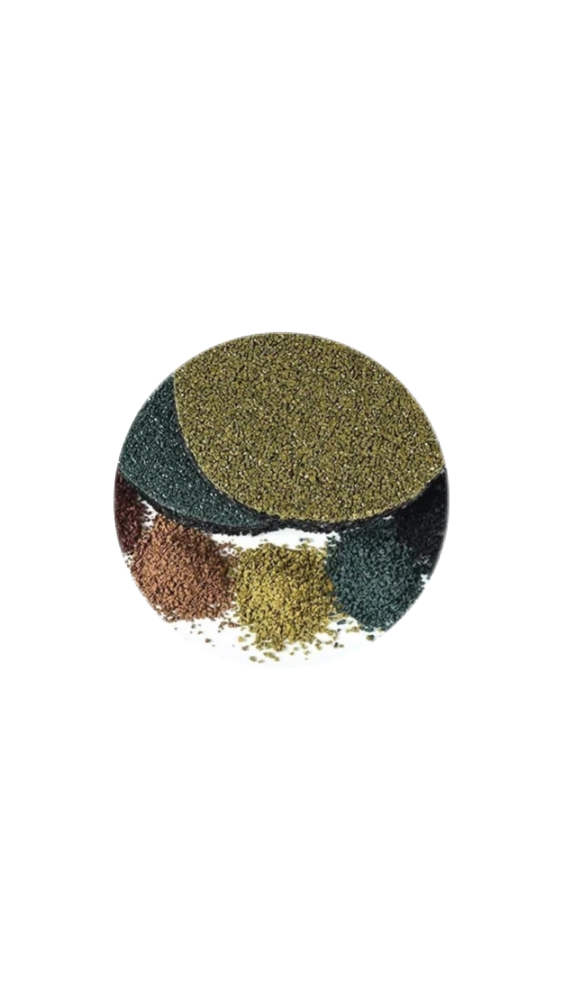

Tijolo Verde

- ...
O piso de pneu reciclado é produzido por meio da raspagem de pneus velhos, gerando fragmentos de diferentes gramaturas, isto é, a conhecida borracha granulada. Posteriormente, retira-se materiais têxteis e aço, bem como substâncias tóxicas, em um processo de transformação de alta tecnologia.
Fazer OrçamentoPiso Verde
- ...
Sua produção pode ser feita com base no processo de extrusão do plástico, no qual este é derretido e preenchido em um molde final ou através de impressão 3D, criando um tijolo que pesa cerca de três quilos, similar a um de argila com as mesmas dimensões.
Fazer Orçamento